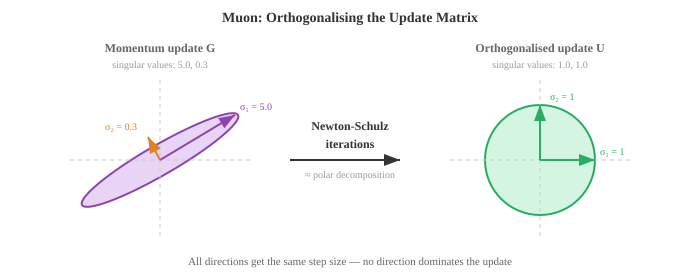
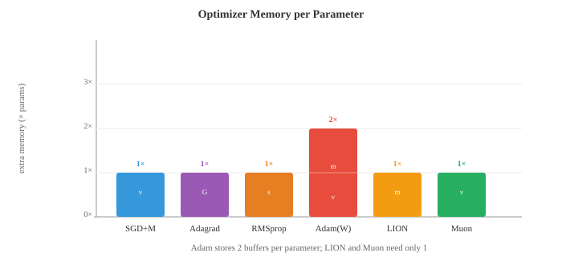

梯度机器学习¶
一句话总结：梯度学习靠"顺着损失曲面的坡度走"迭代更新参数，从线性回归到最大的神经网络都靠它，本节覆盖线性/逻辑回归、优化器族、正则化与偏差-方差权衡。
基于梯度的学习通过反复顺着损失曲面的坡度走来优化模型参数。 本节覆盖线性回归、逻辑回归、Softmax 分类、梯度下降的各种变体、正则化 (L1/L2) 与偏差-方差权衡.
-
文件 01 里的经典方法要么靠巧妙的启发式，要么靠闭式解。 本节要讲的算法则完全不同：它们靠跟随梯度学习，在损失曲面上小步下山，直到找到好参数。 基于梯度的学习是从线性回归到最大规模神经网络背后的共同引擎。
-
线性回归 (linear regression) 是最简单的梯度模型，同时又有闭式解，是完美的起点。 模型就是一条直线 (在高维就是一个超平面):
-
换成矩阵记号 (来自第 02 章)：把所有训练输入按行堆成矩阵 \(X\)，再把偏置吸收进 \(w\) (给 \(X\) 加一列 1)，上式就变成 \(\hat{y} = Xw\).
-
目标是最小化均方误差 (Mean Squared Error, MSE)，也就是预测值和真实值差的平方的平均:
- 为什么用平方误差？它有概率上的理由：假设目标由 \(y = Xw + \epsilon\) 生成，其中 \(\epsilon \sim \mathcal{N}(0, \sigma^2)\)，那么最大化高斯似然 (第 05 章) 就等价于最小化 MSE. 平方误差还有一个好处：它对大错误的惩罚远重于小错误，这在很多场景里正是我们想要的。

- 因为 MSE 是 \(w\) 的二次函数，它有唯一的全局最小值，我们可以解析地求出来。 对 \(w\) 求导，令导数为零，就得到正规方程 (normal equation):
-
这直接用到了第 02 章的矩阵逆。 其中 \(X^T X\) 是 \(d \times d\) 矩阵 (\(d\) 是特征数), \(X^T y\) 是 \(d\) 维向量。 正规方程一步就给出最优权重。
-
正规方程什么时候会挂？当 \(X^T X\) 奇异 (不可逆) 时，也就是特征线性相关，或特征数比样本数还多 (\(d > n\)). 这时就得靠正则化 (下面会讲) 或梯度下降。
-
逻辑回归 (logistic regression) 把线性模型改造成二分类模型。 我们不想输出一个连续值，而想要一个 0 到 1 之间的概率。 Sigmoid 函数正好把任何实数压到这个区间:
- 模型先算 \(z = w \cdot x + b\) (一个线性打分，和线性回归一样)，再过一次 Sigmoid: \(\hat{y} = \sigma(w \cdot x + b)\). 输出 \(\hat{y}\) 就解释成 \(P(y = 1 \mid x)\).

-
Sigmoid 有几个好性质：\(\sigma(0) = 0.5\), \(z \to \infty\) 时 \(\sigma(z) \to 1\), \(z \to -\infty\) 时 \(\sigma(z) \to 0\)，而且它的导数有个非常漂亮的形式 \(\sigma'(z) = \sigma(z)(1 - \sigma(z))\).
-
逻辑回归的损失函数是二元交叉熵 (Binary Cross-Entropy, BCE)，它直接从伯努利似然 (第 05 章) 推出来:
-
真实标签是 1 时，只有第一项起作用，它惩罚偏低的预测；真实标签是 0 时，只有第二项起作用，它惩罚偏高的预测。 对数让 "自信但错" 的预测代价极高：真实标签是 1 却预测 0.01，代价远比预测 0.4 高得多。
-
和线性回归的 MSE 不一样，最小化 BCE 没有闭式解。 我们需要一种迭代方法：梯度下降 (gradient descent).
-
梯度下降的直觉很简单：想象你站在雾里的山坡上 (也就是损失曲面). 你看不见全局最低点，但你能感觉到脚下的坡度。 你就往下坡方向迈一步，再感觉一次坡度，再迈一步，就这么反复，最后就滚到某个山谷。
- 学习率 (learning rate) \(\eta\) 控制步长。 步长太大，你会跨过山谷，来回乱撞不收敛；步长太小，你就慢慢蠕动，甚至可能卡在某个局部极小值里。

-
梯度 \(\frac{\partial \mathcal{L}}{\partial w}\) 是一个指向最陡上升方向的向量。 我们要下山，所以取负号。 这就是第 03 章的链式法则应用在损失函数上。
-
批量梯度下降 (batch gradient descent) 每一步都用整个训练集算梯度。 梯度精确，但当 \(n\) 很大时非常昂贵。
-
随机梯度下降 (Stochastic Gradient Descent, SGD) 每一步只用一个随机样本。 梯度是有噪声的 (只用一个样本估计真实梯度)，但每步极快。 噪声本身有时能帮助跳出浅的局部极小值。
-
小批量梯度下降 (mini-batch gradient descent) 折中：每步用 \(B\) 个样本 (常见是 32、64 或 256). 它平衡了计算效率 (整批做向量化操作) 和梯度质量。 几乎所有深度学习都在用小批量 SGD.
-
反向传播 (backpropagation) 是我们在参数超多的模型 (比如神经网络) 里实际计算梯度的方式。 它就是第 03 章的链式法则，沿着计算图有系统地走一遍。
-
任何模型都能表示成一张有向无环图：输入进来，乘权重、加和、过非线性、最后产出一个损失。 前向传播 (forward pass) 是数据从输入流到输出、算出损失的过程。
-
反向传播 (backward pass) 让梯度反向流。 从损失出发，一路用链式法则算出损失对每个中间量的偏导。 如果 \(L\) 依赖 \(z\), \(z\) 又依赖 \(w\)，就有:
-
每个节点只需要知道自己的局部导数，以及从上游流下来的梯度。 这让反向传播既模块化又高效：反向的代价大约是前向的两倍 (前向一次 + 反向一次).
-
原始 SGD 有个毛病：它在陡峭方向来回震荡，在平坦方向进展缓慢。 优化器 (optimizer) 通过利用梯度历史来自适应地调整步长，改善了这一点。
-
带动量的 SGD (SGD with momentum) 维护一个过去梯度的滑动平均 (指数移动平均，见第 04 章). 它平滑掉震荡，沿着一致方向加速:
-
想象一个球在下坡：动量让它在一致方向上累积速度，同时抑制侧向抖动。 典型取值是 \(\beta = 0.9\).
-
Nesterov 加速梯度 (Nesterov Accelerated Gradient, NAG) 是一个小而聪明的改动：不在当前位置算梯度，而在 "预看" 位置 \(w - \eta \beta v_{t-1}\) 算梯度。 这个修正步能减少冲过头:
- Adagrad 给每个参数配一个自适应学习率：收到大梯度的参数，学习率会变小，反之变大。 它累加梯度的平方:
-
问题是：\(G_t\) 只增不减，有效学习率单调下降，最终小到学不动。
-
RMSprop 用指数移动平均替代累加和来解决这个问题，最近的梯度权重比远古的大:
- Adam (自适应矩估计，Adaptive Moment Estimation) 把动量和 RMSprop 合起来。 它同时维护一阶矩估计 (梯度的均值，像动量) 和二阶矩估计 (梯度平方的均值，像 RMSprop):
- 由于 \(m_t\) 和 \(v_t\) 从零初始化，训练早期它们会偏向零。 偏差修正 (bias correction) 修好这一点:

-
默认超参数 (\(\beta_1 = 0.9\), \(\beta_2 = 0.999\), \(\epsilon = 10^{-8}\)) 在很广泛的问题上都好用，这也是为什么 Adam 是大多数深度学习工作的默认优化器。
-
AdamW 把权重衰减 (weight decay) 从梯度更新里解耦出来。 标准 L2 正则化和权重衰减在 SGD 下等价，但在 Adam 下不等价。 AdamW 把权重衰减直接施加在参数上，而不是把 \(\lambda w\) 加进梯度里。 这带来更好的泛化，目前已是 Transformer 训练的标配:
- LION (演化的符号动量，EvoLved Sign Momentum) 是一种通过程序搜索发现的新优化器。 它只用动量更新的符号(不管幅度)，让每次更新的规模都均匀。 LION 比 Adam 更省内存 (不用二阶矩缓冲区)，在很多任务上能打平甚至超过 Adam:
- Muon (动量 + 正交化，Momentum + Orthogonalisation) 先做 Nesterov 动量，再用 Newton-Schulz 迭代对更新矩阵做正交化 —— 这个过程近似极分解 (polar decomposition). 得到的更新方向落在 Stiefel 流形上，意味着每次更新在所有奇异方向上的幅度大致相等，没有任何单一方向能主导。 这样就不再需要自适应的二阶矩估计 (没有像 Adam 那样的 \(v_t\) 缓冲)，显著省内存。 Muon 在 Transformer 训练上已经拿出很强的结果，常常能在更快收敛的同时匹配 AdamW 的质量，尤其是在注意力和 MLP 权重矩阵上。 嵌入层和输出层通常仍然交给 AdamW.
- Newton-Schulz 迭代通过反复执行 \(X_{k+1} = \frac{1}{2} X_k (3I - X_k^T X_k)\) (通常 5-10 步) 来算出正交因子。 这避免了做完整奇异值分解 (Singular Value Decomposition, SVD) 的高昂代价，又能给出一个不错的近似。


-
除了 MSE 和 BCE，还有几种常用的损失函数 (loss function).
-
平均绝对误差 (Mean Absolute Error, MAE)，也叫 L1 损失，取绝对差的平均：\(\frac{1}{n}\sum|y_i - \hat{y}_i|\). 它比 MSE 更抗离群点，因为它不对大误差平方。
-
Huber 损失 (Huber loss) 兼具两者优点：小误差时表现得像 MSE (平滑，易优化)，大误差时表现得像 MAE (抗离群点). 它有一个阈值 \(\delta\) 控制切换点。
-
多类交叉熵 (Categorical Cross-Entropy, CCE) 把 BCE 推广到多分类。 若 \(\hat{y}_k\) 是模型给类别 \(k\) 的预测概率，真实类别是 \(c\)，则:
-
这就是正确类别的负对数概率。 最小化交叉熵等价于最大化似然，这又和第 05 章的信息论对上了：交叉熵衡量的是用预测分布代替真实分布时需要多出多少比特。
-
合页损失 (hinge loss) 是支持向量机 (Support Vector Machine, SVM) 用的：\(\mathcal{L} = \max(0, 1 - y \cdot f(x))\). 它只惩罚落在错误一侧或在间隔 (margin) 内的预测。 一旦一个点被以足够置信度正确分类，损失就是 0.
-
正则化 (regularisation) 通过给复杂模型加惩罚来防止过拟合。 加了正则化的损失是:
-
L2 正则化 (Ridge，也叫权重衰减 weight decay) 惩罚权重平方和：\(R(w) = \|w\|^2 = \sum w_i^2\). 它不让任何单个权重变得过大，会把所有权重都往零收缩，但基本不会把它们压到严格为零。
-
L1 正则化 (Lasso) 惩罚权重绝对值之和：\(R(w) = \|w\|_1 = \sum |w_i|\). 它鼓励稀疏，会把很多权重推到严格为零，相当于自动做特征选择。
-
弹性网 (Elastic Net) 把两者混起来：\(R(w) = \alpha \|w\|_1 + (1 - \alpha) \|w\|^2\)，兼顾稀疏和收缩。
-
这里有一个漂亮的贝叶斯解释 (来自第 05 章): L2 正则化等价于给权重加高斯先验后取最大后验估计 (Maximum A Posteriori, MAP). L1 正则化对应拉普拉斯先验。 正则化强度 \(\lambda\) 就是你相信先验多于相信数据的程度。
-
评估指标 (evaluation metrics) 告诉你模型到底行不行。 回归用 MSE 和 MAE 就是标准。 分类就要多一些讲究。
-
混淆矩阵 (confusion matrix) 是二分类里四个计数的表格:
- 真正例 (True Positive, TP)：预测正，实际正
- 假正例 (False Positive, FP)：预测正，实际负
- 真负例 (True Negative, TN)：预测负，实际负
-
假负例 (False Negative, FN)：预测负，实际正
-
准确率 (accuracy) = \(\frac{TP + TN}{TP + TN + FP + FN}\)，在类别不平衡时会误导你。 假如 99% 的邮件不是垃圾邮件，一个永远预测 "不是垃圾邮件" 的模型也能拿 99% 的准确率，但这模型完全没用。
-
精确率 (precision) = \(\frac{TP}{TP + FP}\) 回答：所有被预测为正的样本里，真正是正的占多少？精确率高意味着误报少。
-
召回率 (recall，或 sensitivity) = \(\frac{TP}{TP + FN}\) 回答：所有真的是正的样本里，你抓住了多少？召回率高意味着漏报少。
-
F1 分数 = \(\frac{2 \cdot \text{precision} \cdot \text{recall}}{\text{precision} + \text{recall}}\) 是精确率和召回率的调和均值，兼顾两者。
-
ROC 曲线把真正例率 (即召回率) 对假正例率 (\(\frac{FP}{FP + TN}\)) 作图，横扫分类阈值从 0 到 1. 完美的分类器会紧贴左上角。 AUC (ROC 曲线下面积，Area Under the Curve) 把整体表现浓缩成一个数：1.0 是完美，0.5 就是瞎猜。
-
交叉验证 (cross-validation) 给出更可靠的泛化性能估计。 在 \(k\) 折交叉验证里，你把数据分成 \(k\) 折，用其中 \(k-1\) 折训练，用剩下 1 折测试，然后轮换。 所有 \(k\) 折的平均测试性能就是你的估计。 这样所有数据都参与了训练和测试 (只是不同时参与)，数据紧张时尤其宝贵。
-
偏差-方差权衡 (bias-variance tradeoff) (来自第 04 章) 是 ML 里最根本的张力。 模型的期望误差可以拆成:
-
偏差 (bias) 是由错误假设带来的系统性偏差 (比如用直线去拟合弯曲数据). 方差 (variance) 是模型对训练数据波动的敏感度 (比如用 20 次多项式去拟合噪声). 简单模型高偏差、低方差；复杂模型低偏差、高方差。 甜蜜点是让二者之和最小的位置。
-
学习率调度 (learning rate scheduling) 在训练过程中调整 \(\eta\). 常见策略:
- 阶梯衰减 (step decay)：每 \(N\) 个 epoch 把 \(\eta\) 乘以一个因子 (比如 0.1)
- 余弦退火 (cosine annealing)：让 \(\eta\) 沿余弦曲线从初始值平滑降到接近 0
- 预热 (warmup)：从非常小的 \(\eta\) 开始，前几千步线性升上去，之后再衰减。 这能避免训练初期的大梯度把模型带偏
-
1cycle：用一个余弦周期先升再降，有时能加速收敛
-
超参数调优 (hyperparameter tuning) 就是给学习率、批大小、正则化强度这些不是靠梯度下降学的设定找到好值。 常见方法:
- 网格搜索 (grid search)：在预定义网格上试每一种组合 (穷尽但昂贵)
- 随机搜索 (random search)：随机采组合，通常更高效，因为不同超参数的重要程度差别很大
- 贝叶斯优化 (Bayesian optimisation)：给目标函数建一个模型，智能地挑下一个要试的超参数
-
ASHA (异步逐次减半算法，Asynchronous Successive Halving Algorithm)：并行跑很多短预算的试验，把最有希望的挑出来给更大预算，剩下的早早砍掉。 它把早停和大规模并行结合起来 —— 与其跑 100 次完整训练，不如让 100 个都便宜地起步，每一轮只保留前四分之一，只有极少数跑到底。 这也是 Ray Tune 这类现代大规模调参框架的核心。
-
无调度学习 (schedule-free learning) 干脆去掉学习率调度。 它不再让 \(\eta\) 沿固定曲线衰减，而是维护两条序列：缓慢移动的迭代平均 \(z_t\) (它收敛到最优点) 和快速探索的迭代 \(y_t\) (梯度在这里计算). 最终输出是平均序列，可以证明它的收敛率能匹配事后最优的调度。 这就彻底把调度作为一个超参数消掉了 —— 你只设一个基础学习率，剩下的交给优化器。 SGD 和 Adam 的无调度变体都已经被证明能匹配甚至超过精心调过调度的版本。
编程练习 (用 CoLab 或 notebook 完成)¶
-
用正规方程和梯度下降两种方式实现线性回归。 对比两种解，并画出梯度下降损失随迭代变化的收敛曲线。
import jax import jax.numpy as jnp import matplotlib.pyplot as plt # 生成合成数据: y = 3x + 2 + 噪声 key = jax.random.PRNGKey(42) n = 100 X = jax.random.uniform(key, (n, 1), minval=0, maxval=10) y = 3 * X[:, 0] + 2 + jax.random.normal(key, (n,)) * 1.5 # 加偏置列 X_b = jnp.column_stack([X, jnp.ones(n)]) # 正规方程 w_exact = jnp.linalg.solve(X_b.T @ X_b, X_b.T @ y) print(f"Normal equation: w={w_exact[0]:.4f}, b={w_exact[1]:.4f}") # 梯度下降 w_gd = jnp.zeros(2) lr = 0.005 losses = [] for step in range(500): pred = X_b @ w_gd error = pred - y loss = jnp.mean(error ** 2) losses.append(float(loss)) grad = (2 / n) * X_b.T @ error w_gd = w_gd - lr * grad print(f"Gradient descent: w={w_gd[0]:.4f}, b={w_gd[1]:.4f}") fig, axes = plt.subplots(1, 2, figsize=(12, 4)) axes[0].scatter(X[:, 0], y, s=15, alpha=0.5, color='#3498db') axes[0].plot([0, 10], [w_exact[1], w_exact[0]*10 + w_exact[1]], color='#e74c3c', linewidth=2) axes[0].set_title("Linear Regression Fit") axes[0].set_xlabel("x"); axes[0].set_ylabel("y") axes[1].plot(losses, color='#27ae60', linewidth=1.5) axes[1].set_title("GD Loss Convergence") axes[1].set_xlabel("Step"); axes[1].set_ylabel("MSE") axes[1].set_yscale('log') plt.tight_layout() plt.show() -
从零实现逻辑回归 + 梯度下降。 在一个 2D 数据集上训练，并可视化学到的决策边界。
import jax import jax.numpy as jnp import matplotlib.pyplot as plt from sklearn.datasets import make_moons # 生成数据 X, y = make_moons(n_samples=300, noise=0.2, random_state=42) X, y = jnp.array(X), jnp.array(y, dtype=jnp.float32) def sigmoid(z): return 1 / (1 + jnp.exp(-z)) # 加偏置列 X_b = jnp.column_stack([X, jnp.ones(len(X))]) w = jnp.zeros(3) lr = 0.5 losses = [] for step in range(2000): z = X_b @ w pred = sigmoid(z) # BCE 损失 loss = -jnp.mean(y * jnp.log(pred + 1e-8) + (1 - y) * jnp.log(1 - pred + 1e-8)) losses.append(float(loss)) # 梯度 grad = X_b.T @ (pred - y) / len(y) w = w - lr * grad # 决策边界 xx, yy = jnp.meshgrid(jnp.linspace(-2, 3, 200), jnp.linspace(-1.5, 2, 200)) grid = jnp.column_stack([xx.ravel(), yy.ravel(), jnp.ones(xx.size)]) zz = sigmoid(grid @ w).reshape(xx.shape) plt.figure(figsize=(8, 6)) plt.contourf(xx, yy, zz, levels=[0, 0.5, 1], alpha=0.3, colors=['#e74c3c', '#3498db']) plt.contour(xx, yy, zz, levels=[0.5], colors='#9b59b6', linewidths=2) plt.scatter(X[y==0, 0], X[y==0, 1], c='#e74c3c', s=15, label='Class 0') plt.scatter(X[y==1, 0], X[y==1, 1], c='#3498db', s=15, label='Class 1') plt.title("Logistic Regression Decision Boundary") plt.legend() plt.grid(alpha=0.3) plt.show() -
在一个二维二次曲面上对比不同优化器的轨迹。 从同一起点跑 SGD、SGD+Momentum 和 Adam，画出各自的路径。
import jax import jax.numpy as jnp import matplotlib.pyplot as plt # 拉长的二次: L(w1, w2) = 0.5*w1^2 + 10*w2^2 def loss_fn(w): return 0.5 * w[0]**2 + 10 * w[1]**2 grad_fn = jax.grad(loss_fn) def run_sgd(w0, lr=0.05, steps=80): w = w0.copy() path = [w.copy()] for _ in range(steps): g = grad_fn(w) w = w - lr * g path.append(w.copy()) return jnp.stack(path) def run_momentum(w0, lr=0.05, beta=0.9, steps=80): w, v = w0.copy(), jnp.zeros(2) path = [w.copy()] for _ in range(steps): g = grad_fn(w) v = beta * v + (1 - beta) * g w = w - lr * v path.append(w.copy()) return jnp.stack(path) def run_adam(w0, lr=0.05, b1=0.9, b2=0.999, eps=1e-8, steps=80): w, m, v = w0.copy(), jnp.zeros(2), jnp.zeros(2) path = [w.copy()] for t in range(1, steps + 1): g = grad_fn(w) m = b1 * m + (1 - b1) * g v = b2 * v + (1 - b2) * g**2 m_hat = m / (1 - b1**t) v_hat = v / (1 - b2**t) w = w - lr * m_hat / (jnp.sqrt(v_hat) + eps) path.append(w.copy()) return jnp.stack(path) w0 = jnp.array([8.0, 3.0]) sgd_path = run_sgd(w0) mom_path = run_momentum(w0) adam_path = run_adam(w0) # 画图 fig, ax = plt.subplots(figsize=(8, 6)) w1 = jnp.linspace(-10, 10, 100) w2 = jnp.linspace(-4, 4, 100) W1, W2 = jnp.meshgrid(w1, w2) L = 0.5 * W1**2 + 10 * W2**2 ax.contour(W1, W2, L, levels=20, cmap='Greys', alpha=0.4) ax.plot(sgd_path[:,0], sgd_path[:,1], 'o-', color='#3498db', markersize=2, linewidth=1, label='SGD') ax.plot(mom_path[:,0], mom_path[:,1], 'o-', color='#27ae60', markersize=2, linewidth=1, label='Momentum') ax.plot(adam_path[:,0], adam_path[:,1], 'o-', color='#e74c3c', markersize=2, linewidth=1, label='Adam') ax.plot(0, 0, 'k*', markersize=15, label='Minimum') ax.set_xlabel('w₁'); ax.set_ylabel('w₂') ax.set_title("Optimizer Trajectories on Elongated Quadratic") ax.legend() plt.grid(alpha=0.3) plt.show() -
展示 L1 vs L2 正则化对权重稀疏性的影响。 分别用两种惩罚训练线性回归，对比最终的权重向量。
import jax import jax.numpy as jnp import matplotlib.pyplot as plt # 合成数据: 20 个特征里只有前 3 个相关 key = jax.random.PRNGKey(0) n, d = 200, 20 w_true = jnp.zeros(d).at[:3].set(jnp.array([3.0, -2.0, 1.5])) X = jax.random.normal(key, (n, d)) y = X @ w_true + 0.5 * jax.random.normal(key, (n,)) def train_ridge(X, y, lam=1.0, lr=0.01, steps=2000): """L2 正则化线性回归 (梯度下降).""" w = jnp.zeros(X.shape[1]) for _ in range(steps): pred = X @ w grad = (2/len(y)) * X.T @ (pred - y) + 2 * lam * w w = w - lr * grad return w def train_lasso(X, y, lam=1.0, lr=0.01, steps=2000): """L1 正则化线性回归 (近端梯度下降).""" w = jnp.zeros(X.shape[1]) for _ in range(steps): pred = X @ w grad = (2/len(y)) * X.T @ (pred - y) w = w - lr * grad # 软阈值 (L1 的近端算子) w = jnp.sign(w) * jnp.maximum(jnp.abs(w) - lr * lam, 0) return w w_l2 = train_ridge(X, y, lam=0.1) w_l1 = train_lasso(X, y, lam=0.1) fig, axes = plt.subplots(1, 3, figsize=(14, 4)) axes[0].bar(range(d), w_true, color='#333', alpha=0.7) axes[0].set_title("True Weights"); axes[0].set_xlabel("Feature") axes[1].bar(range(d), w_l2, color='#3498db', alpha=0.7) axes[1].set_title("L2 (Ridge): shrinks all"); axes[1].set_xlabel("Feature") axes[2].bar(range(d), w_l1, color='#e74c3c', alpha=0.7) axes[2].set_title("L1 (Lasso): zeros out irrelevant"); axes[2].set_xlabel("Feature") plt.tight_layout() plt.show() print(f"L2 non-zero weights: {int(jnp.sum(jnp.abs(w_l2) > 0.01))}/{d}") print(f"L1 non-zero weights: {int(jnp.sum(jnp.abs(w_l1) > 0.01))}/{d}")
📌 本节要点¶
- 线性回归：最简单的梯度模型，拟合直线/超平面，有正规方程闭式解 \(w^{*} = (X^T X)^{-1} X^T y\).
- 逻辑回归：线性打分过 Sigmoid 得到概率，用二元交叉熵 (BCE) 训练，无闭式解，需迭代求解。
- 梯度下降：顺着 \(-\nabla \mathcal{L}\) 走小步下山，学习率 \(\eta\) 决定步长，太大发散、太小卡住。
- 小批量 SGD：每步用 32-256 个样本，平衡计算效率与梯度质量，深度学习的标配。
- 反向传播：链式法则在计算图上系统展开，反向流梯度，代价约为前向的两倍。
- Adam 与 AdamW：融合动量 (一阶矩) 和 RMSprop (二阶矩), AdamW 解耦权重衰减，Transformer 训练标配。
- LION 与 Muon：更省内存的新一代优化器，LION 用动量符号，Muon 通过 Newton-Schulz 正交化更新矩阵。
- 正则化: L2 收缩权重 (对应高斯先验), L1 促稀疏 (对应拉普拉斯先验)，都以最大后验估计 (MAP) 解释。
- 分类评估：类别不平衡时准确率不可靠，用精确率/召回率/F1，全阈值扫看 ROC 曲线下面积 (AUC).
- 偏差-方差权衡：期望误差 = 偏差² + 方差 + 不可约噪声，模型复杂度调节两者的此消彼长。